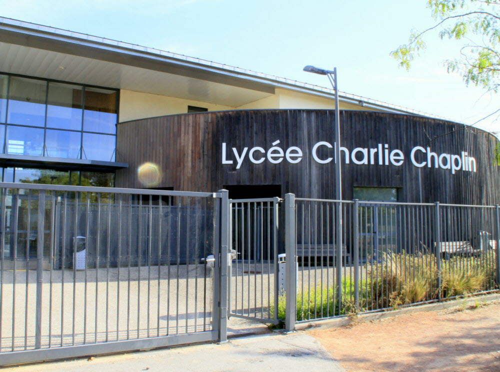
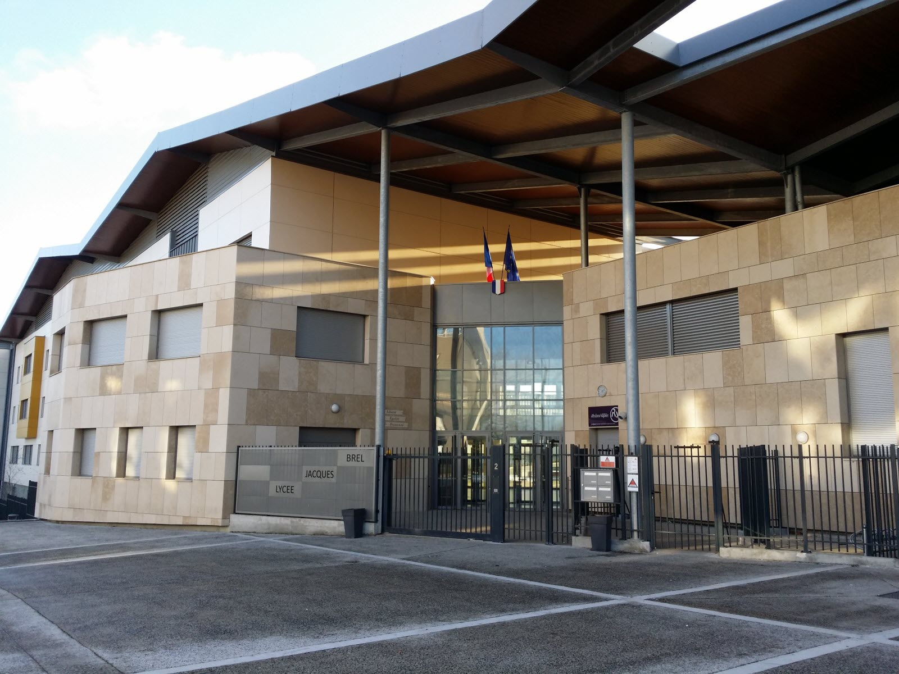

Formation
Parcours scolaire
2021 – 2024
Baccalauréat STMG — Spécialité Gestion Finance
Lycée Charlie Chaplin
J'ai suivi dès la première la spécialité STMG pour le baccalauréat. En terminale, j'étais en spécialité Gestion Finance. J'ai obtenu mon bac STMG en 2024.
Science de gestion
Management
Économie & Droit
Gestion Finance

2024 – présent
BTS SIO — Option SLAM
Lycée Jacques Brel
Je poursuis actuellement un BTS Services Informatiques aux Organisations, option Solutions Logicielles et Applications Métiers. Cette formation m'a apporté des compétences solides en développement et en réseau.
Réseau
Routage
Analyse de trame
Adressage IP
Gestion d'incident
Développement
HTML
CSS
JavaScript
C#
PHP
Python
SQL
J'ai également acquis des connaissances en cybersécurité.
